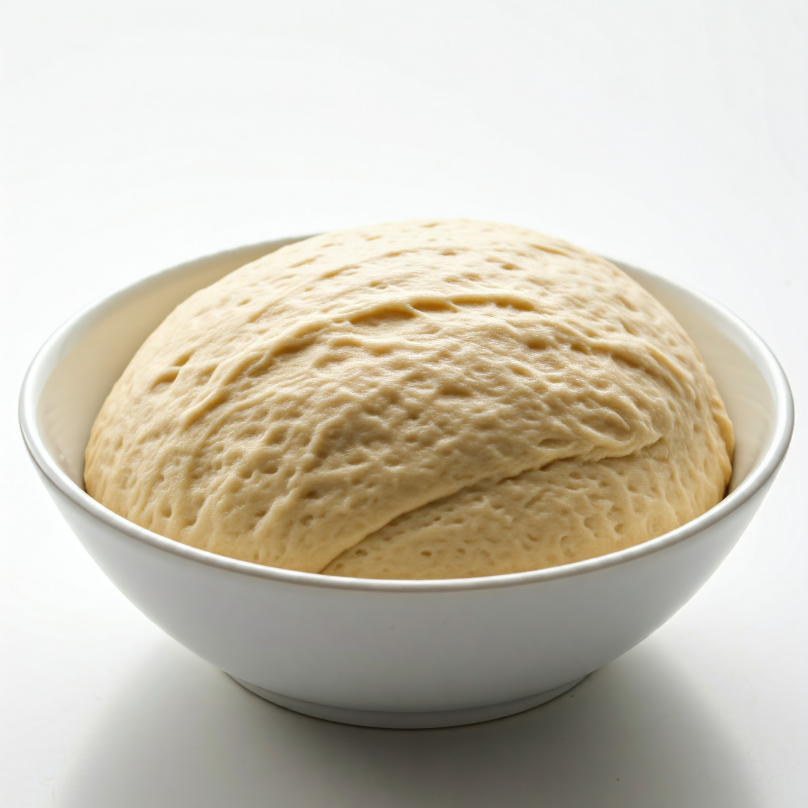
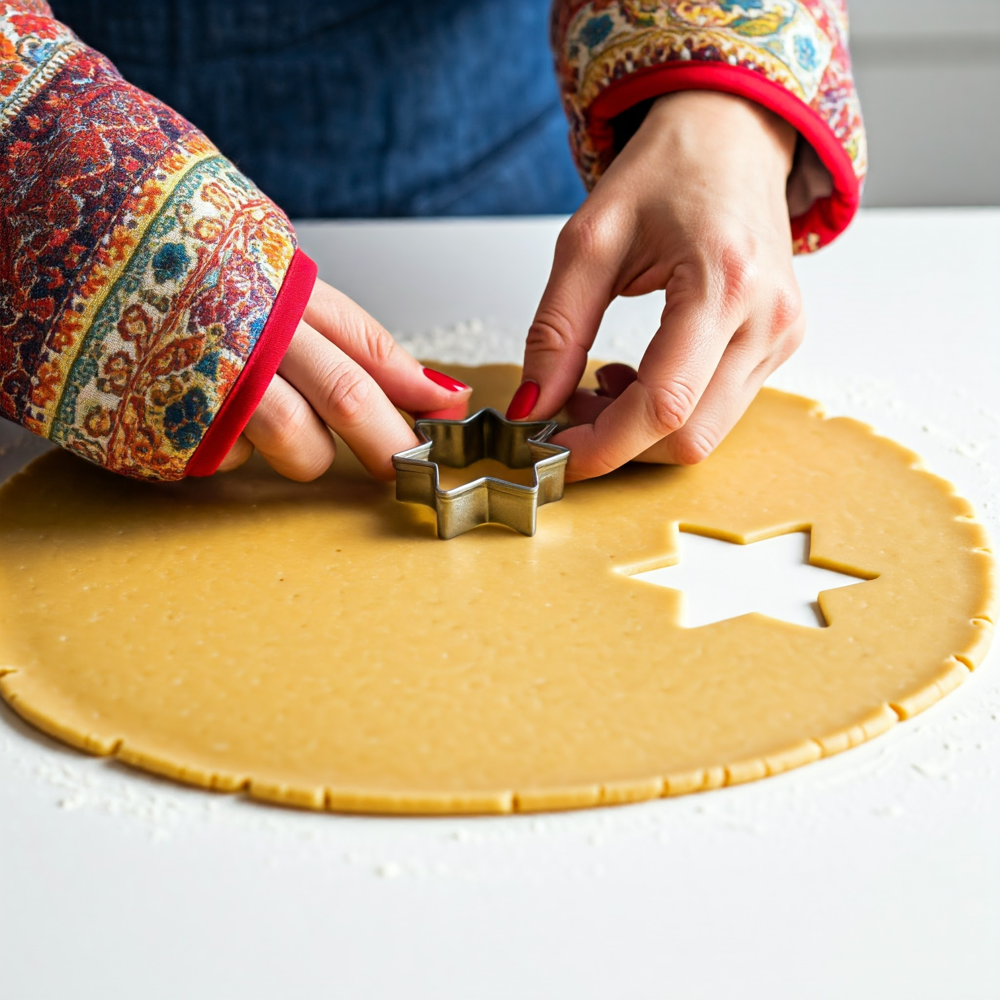
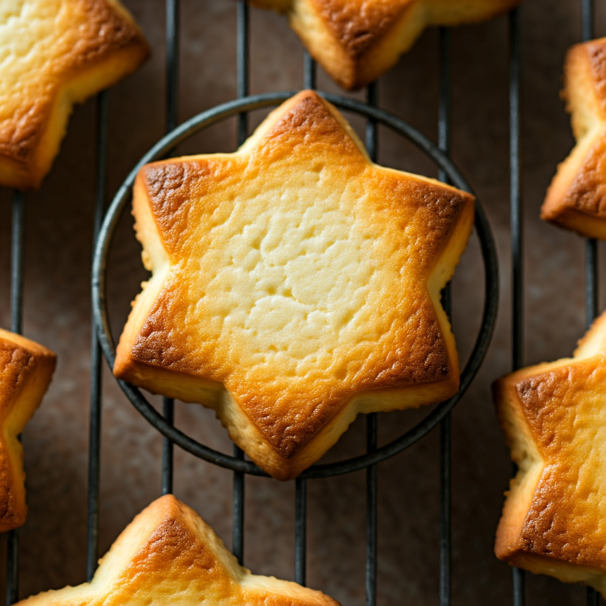

Directions
-
To make soft, tender and airy cottage cheese cookies, you will need cottage cheese, butter, sugar, vanilla sugar, flour,
a little salt and baking powder.Cottage cheese should be taken of medium humidity, of any fat content, you can use
paste-like cottage cheese. Both white and brown sugar are suitable.The latter will color the cookies a little and give
a light caramel taste.It is better to take vanilla sugar natural with ground vanilla bean, it can be replaced with vanilla
essence or extract. It is advisable not to use chemical vanillin, its aroma is different from the delicate rich aroma
of natural vanilla. Instead of vanilla, you can put cinnamon, 0.5 tsp. will be enough.
Butter should be soft, at room temperature, so it should be taken out of the refrigerator in advance.
Put the cottage cheese in a large bowl, add softened butter, sugar, vanilla sugar and a pinch of salt.
Mix everything well and blend until smooth. If you don't have a blender, then you can rub the mass through a sieve or
use paste-like cottage cheese and mix all the ingredients thoroughly with a fork or whisk.
You can also take cottage cheese with small grains, in this case small grains will be found in the cookies,
but this is not critical at all. Cottage cheese cookies will still turn out to be delicious, soft, tender and airy.
Sift the flour together with baking powder into a separate bowl and add to the curd mass in parts. You may need more or
less flour, depending on its quality (dryness, grinding, variety, etc.) and the moisture content of the cottage cheese.
First, you should knead the dough with a spatula or culinary scraper, and then knead with your hands.
The dough should be soft, tender, while holding its shape well and not sticking to your hands. You should not knead it for
a long time, otherwise the gluten in the flour will make the cookies hard. Wrap the dough in cling film or put it in a bag and put
it in the refrigerator for half an hour to stabilize.The softened butter will harden, and it will be easier to work with the dough.
Then remove the dough from the refrigerator, put it on a board dusted with flour or a countertop and roll out into a layer 3 - 5 mm thick.
Using molds or any glass, cut out the cookie blanks. You can cut the rolled out layer of dough with a knife into squares or rhombuses.
You can form cookies in another way. Make a sausage from the dough, cut into pieces, and then roll into small balls and flatten slightly.
Put the cookies on a baking sheet covered with parchment and bake in an oven preheated to 180 degrees for about 20 minutes
until lightly golden. When baking cookies, you need to focus on the features of your oven and look after them so that they do not burn.
In the oven, the cookies will rise about three times.
Remove the cottage cheese cookies from the oven and cool.
-
Serve soft, tender and airy cottage cheese cookies with tea, coffee or milk. When serving, you can sprinkle with powdered sugar.
So, in order for cottage cheese cookies to be soft and airy, you need to follow the following rules.
- Do not knead the dough for too long, do not clog it with flour, but at the same time add enough flour so that the dough
holds its shape well.
- Before forming cookies, the dough must be cooled well.
- Roll out the dough into a layer 3 - 5 mm thick, not thinner.
- Do not overcook the cookies in the oven, otherwise they may be dry.
These simple rules will help you bake soft and airy cottage cheese cookies. Have a delicious pastry!
|
.png)



|